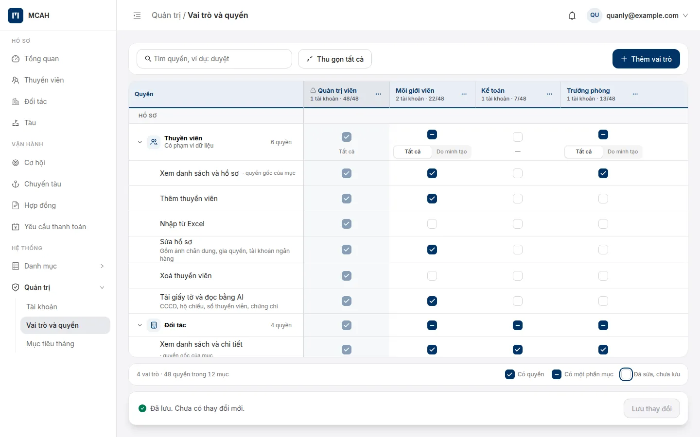

Vai trò và phân quyền
Vai trò, quyền và phạm vi dữ liệu; tạo và sửa vai trò.
MCAH không gắn sẵn vai trò cố định, trừ Quản trị viên có mọi quyền. Công ty tự tạo vai trò (ví dụ Môi giới viên, Kế toán, Trưởng phòng) và tích từng quyền trong bảng. Mỗi tài khoản có một vai trò; vai trò quyết định menu nào hiện ra và thao tác nào bấm được, cả trên giao diện lẫn ở máy chủ.
Bảng quyền có 12 mục, 48 quyền, chia ba nhóm Hồ sơ, Vận hành, Hệ thống. Bốn nhóm công việc dùng trong tài liệu này chỉ để đọc cho dễ; quyền thật là quyền công ty đã tích cho vai trò của bạn.
| Nhóm công việc | Thường được cấp |
|---|---|
| Môi giới | Thuyền viên, Đối tác và Tàu (xem, thêm, sửa), Cơ hội (đủ quyền), Chuyến tàu, Hợp đồng (tạo, sửa nháp, gửi duyệt) |
| Duyệt & quản lý | Duyệt và từ chối hợp đồng, kết thúc hợp đồng, xem số cả công ty trên Tổng quan, đặt mục tiêu tháng |
| Kế toán | Yêu cầu thanh toán: sửa số tiền, duyệt, đánh dấu đã gửi, ghi nhận đã thu |
| Quản trị | Tài khoản, Vai trò và quyền, Danh mục |
Phạm vi dữ liệu
Sáu mục Thuyền viên, Bản xuất, Cơ hội, Chuyến tàu, Hợp đồng, Yêu cầu thanh toán có thêm phạm vi: Tất cả hoặc Do mình tạo. Chọn Do mình tạo thì người đó chỉ thấy và làm trên bản ghi do chính mình tạo.

Tích bất kỳ quyền nào của một mục thì tự có quyền Xem của mục đó. Người duyệt yêu cầu thanh toán phải khác người vừa sửa nó. Quyền đổi có hiệu lực từ lần tải trang tới của người được đổi.
Tạo và sửa vai trò
- + Thêm vai trò: đặt tên, mô tả, có thể sao chép quyền từ một vai trò đã có.
- Tích quyền trong cột của vai trò. Ô tìm kiếm lọc quyền theo chữ, ví dụ "duyệt"; Thu gọn tất cả chỉ để lại tên mục.
- Với mục có phạm vi dữ liệu, chọn Tất cả hoặc Do mình tạo ở dòng tên mục.
- Bấm Lưu thay đổi. Ô đã sửa nhưng chưa lưu có viền riêng để dễ soát.
Vai trò Quản trị viên luôn có mọi quyền và không sửa được. Chỉ Quản trị viên được sửa vai trò và quyền.